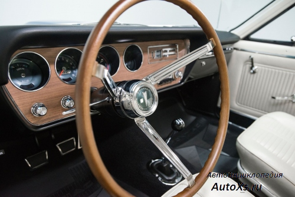
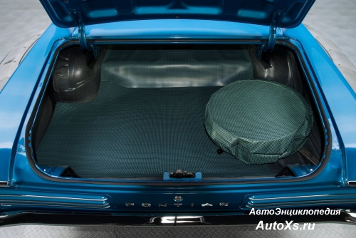

Classic medium car
The GTO has an all-steel body on a separate frame with wishbone front suspension and coil spring drive axle at the rear. providing a smooth ride.
-
 From 1964 to 1967, the standard GTO engine was a 6301cc V8, first
introduced in 1959 as an optional engine for large Pontiac cars.
Heavy cast iron block, specially for GTA it was fitted with hotter
camshaft and High Output 421 cylinder heads.
From 1964 to 1967, the standard GTO engine was a 6301cc V8, first
introduced in 1959 as an optional engine for large Pontiac cars.
Heavy cast iron block, specially for GTA it was fitted with hotter
camshaft and High Output 421 cylinder heads.
-  Based on the Tempest, the GTO, of course, had the same body on the frame, front suspension arms and coil-spring drive axle, but it had a thicker front anti-roll bar, powerful shock absorbers, stiffer springs and high-speed tires.
-  Even today, you rarely find a car cooler than a 1966 GTO. The front bucket seats may not provide enough support by modern standards, but the dash is pleasing to the eye and the interior is modest and tasteful.Very beautiful car.